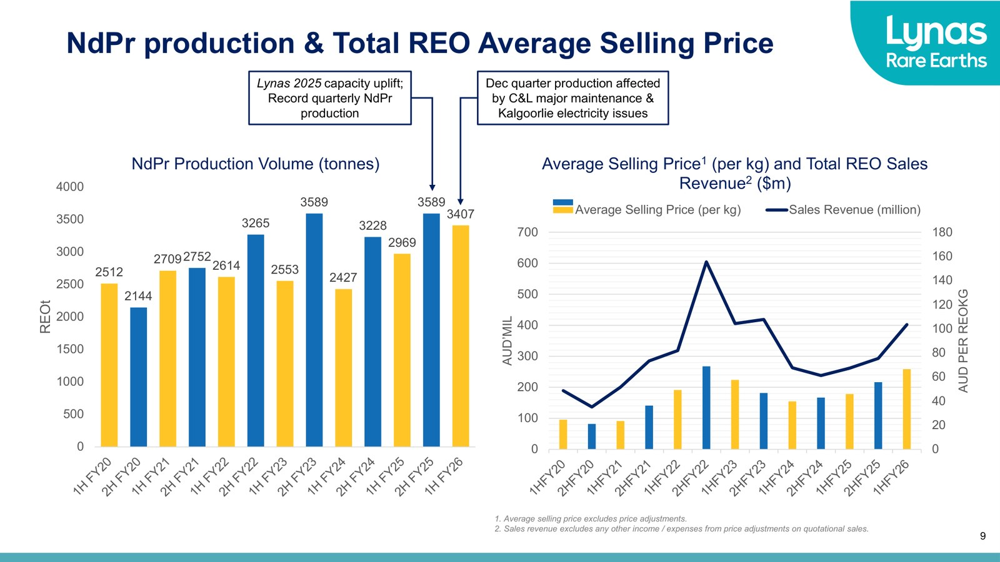
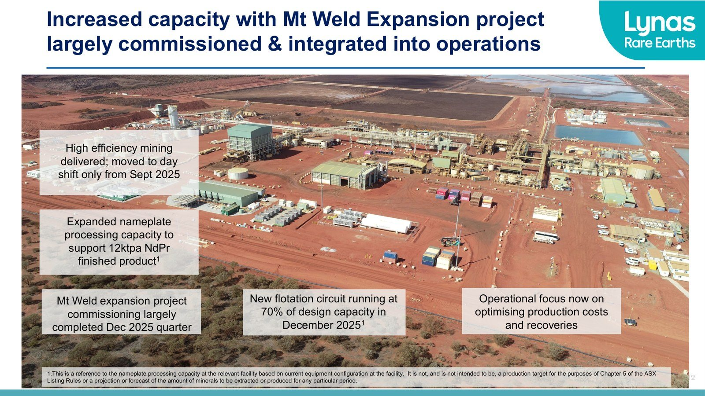
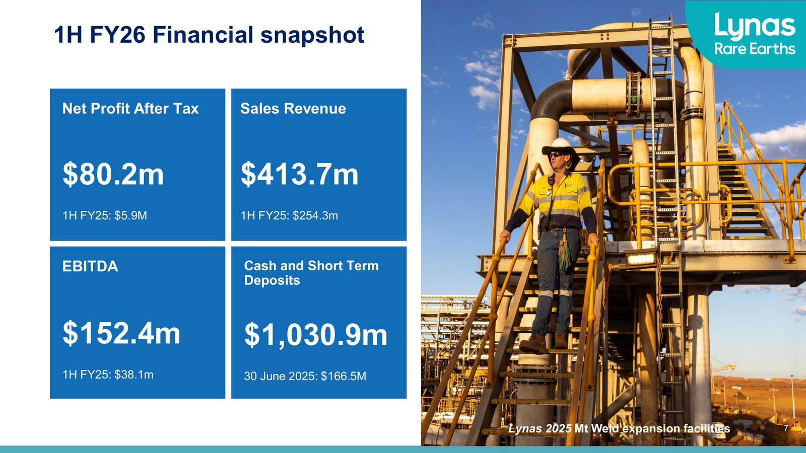

LYNAS RARE EARTHS 🇦🇺 (ASX:LYC)
Model biznesowy w obrazach

Kwartalny wolumen produkcji NdPr (tony) oraz średnia cena sprzedaży i przychody ze sprzedaży REO - rdzeń ekonomiki producenta. Źródło: Lynas Rare Earths, prezentacja wyników 1H FY26 (luty 2026).

Projekt rozbudowy Mt Weld: zwiększenie mocy przerobowej do 12 kt NdPr rocznie, rozruch ukończony w grudniu 2025. Źródło: Lynas Rare Earths, prezentacja wyników 1H FY26 (luty 2026).

Migawka finansowa 1H FY26: zysk netto 80,2 mln AUD, przychody 413,7 mln AUD, EBITDA 152,4 mln AUD, gotówka 1,03 mld AUD. Źródło: Lynas Rare Earths, prezentacja wyników 1H FY26 (luty 2026).
W kontekście: Wydobycie (upstream)
Czym jest spółka. Lynas kontroluje zintegrowany łańcuch pierwiastków ziem rzadkich (REE) poza Chinami: wydobywa rudę i produkuje koncentrat w Mt Weld w Australii Zachodniej, przetwarza go pośrednio w Kalgoorlie, a następnie rozdziela i rafinuje produkty w Malezji. Upstream nie jest więc samodzielnym biznesem sprzedającym wyłącznie koncentrat, lecz początkiem wewnętrznego strumienia materiałowego prowadzącego do tlenków o wyższej wartości.
Mt Weld jako fundament surowcowy. Zasoby mineralne Mt Weld wynoszą 106,6 mln ton przy zawartości 4,12% TREO. To dane wtórne, cytowane za ogłoszeniem spółki. Aktualizacja z 2024 r. podniosła zasoby mineralne o 92%, a rezerwy rudy o 63%. Dane wskazują na dużą bazę do podtrzymania oraz rozbudowy działalności, lecz wielkość zasobów nie jest równoznaczna z wolumenem możliwym do ekonomicznego wydobycia w danym okresie.
Rozbudowany Mt Weld ma według źródła branżowego moc projektową wspierającą około 12 000 ton rocznie gotowego NdPr. Jest to wartość typu nameplate capacity, a nie deklaracja faktycznej produkcji. Rzeczywiste wykorzystanie zależy od pracy kopalni, charakterystyki rudy, przepustowości Kalgoorlie i stabilności instalacji separacyjnych w Malezji.
Energia i ciągłość operacyjna. W pierwszej połowie FY26 w pełni uruchomiono hybrydową elektrownię odnawialną Mt Weld o mocy 65 MW. W kwartale czerwcowym FY26 średni udział energii odnawialnej w zasilaniu zakładu wyniósł 90%. Ogranicza to zależność kopalni od konwencjonalnego źródła energii, ale nie usuwa ryzyka technicznego związanego z jakością koncentratu.
To ryzyko ujawniło się w Q4 FY26. Wymiana ruchomej kruszarki na stałą zmniejszyła możliwość selektywnego podawania rudy do młyna i utrudniła kontrolę zanieczyszczeń w koncentracie. Mimo rekordowej łącznej produkcji tlenków produkcja NdPr spadła z 1 996 ton w Q3 FY26 do 1 857 ton w Q4 FY26. Przypadek pokazuje, że większa masa produktu nie musi oznaczać większego wolumenu najbardziej wartościowego składnika.
Znaczenie biznesowe: własne złoże o rozbudowanej bazie zasobowej daje Lynas kontrolę nad początkiem łańcucha, ale ekonomika całej grupy zależy od tego, czy jakość koncentratu pozwala stabilnie zasilać dalsze instalacje.
Dla inwestora: kluczowe jest rozdzielenie zasobów, mocy projektowej i rzeczywistej produkcji - każda z tych miar opisuje inny poziom zdolności operacyjnej.
W kontekście: Separacja, rafinacja i metalurgia
Kalgoorlie jako etap pośredni. Zakład w Kalgoorlie przetwarza koncentrat z Mt Weld w MREC, czyli mieszaninę węglanów ziem rzadkich przeznaczoną do dalszej separacji. Według źródła branżowego jego moc projektowa wspiera około 9 000 ton rocznie ekwiwalentu NdPr. W FY25 zakład pracował jednak poniżej mocy projektowej, co spółka wskazała jako jeden z czynników obniżających wynik netto. Oznacza to, że sama budowa aktywa nie kończy procesu inwestycyjnego - o wyniku decyduje jeszcze osiągnięcie stabilnej przepustowości i wymaganej jakości produktu.
Malezja jako centrum separacji. Lynas Malaysia w Kuantan rozdziela MREC na gotowe tlenki. Rozbudowa instalacji ekstrakcji rozpuszczalnikowej i wykańczania produktów ma podnieść moc projektową do 10,5 kt/rok, a strategia Towards 2030 zakłada docelową moc separacji NdPr na poziomie 12 kt/rok. Te wartości są mocami projektowymi, nie prognozą sprzedaży.
Znaczenie zakładu wzrosło wraz z uruchomieniem separacji ciężkich pierwiastków ziem rzadkich (HRE). W FY25 Lynas wprowadził do sprzedaży 2 nowe produkty HRE - tlenek dysprozu i tlenek terbu, wykorzystywane w magnesach trwałych do silników elektrycznych. Spółka określa się jako jedyny komercyjny producent oddzielonych ciężkich tlenków ziem rzadkich poza Chinami. W Q4 FY26 łączna produkcja Dy i Tb wyniosła 19 ton.
W marcu 2026 r. uruchomiono pierwszy etap produkcji tlenku samaru, z oczekiwaną zdolnością około 400 ton rocznie. Jest to rozszerzenie portfela poza NdPr i produkty masowe, lecz dowody nie ujawniają rzeczywistej sprzedaży samaru ani jej udziału w przychodach.
Rozbudowa HRE i koszt wykonania. Szacowany koszt rozbudowy malezyjskiej instalacji HRE wzrósł z około 180 mln AUD do około 294 mln AUD, wraz z rezerwą na nieprzewidziane wydatki. Wzrost kosztu pokazuje, że technologiczna przewaga separacyjna wymaga dalszego kapitału i jest obciążona ryzykiem wykonawczym.
Malezyjska licencja operacyjna została odnowiona na 10 lat od 3 marca 2026 r., podczas gdy wcześniejsze licencje wydawano na 3 lata. Dłuższy okres poprawia widoczność prawną zakładu, ale licencja pozostaje warunkowa. Według źródła wtórnego produkcja odpadów WLP ma zakończyć się do 2031 r.
Znaczenie biznesowe: Malezja jest miejscem, w którym koncentrat staje się oddzielonym produktem handlowym, dlatego przepustowość, licencja i koszt rozbudowy tej instalacji wpływają na wartość całego strumienia z Mt Weld.
Dla inwestora: przewagę Lynas należy oceniać przez stabilność separacji i kwalifikację nowych produktów u odbiorców, a nie tylko przez nominalną skalę wydobycia.
W kontekście: Dywersyfikacja i budowa łańcucha poza Chinami
Lynas jest elementem budowy łańcucha, który ma dostarczać oddzielone lekkie i ciężkie tlenki ziem rzadkich bez korzystania z chińskiej separacji. Spółka określa się jako jedyny komercyjny producent obu tych grup tlenków poza Chinami. Jej aktywa obejmują australijskie wydobycie i przetwarzanie oraz malezyjską separację, ale dalsze etapy - metal i gotowy magnes - wymagają partnerów.
Japonia. Relacja z JARE, tworzonym przez JOGMEC i Sojitz, sięga inwestycji Japonii w Lynas w 2011 r. i trwa od 15 lat do aktualizacji umowy w 2026 r. Zaktualizowane porozumienie zabezpiecza dla japońskiego przemysłu wiążący zakup 5 000 ton NdPr rocznie oraz szerszą, warunkową dostępność do 7 200 ton rocznie do 2038 r. W HRE JARE zobowiązał się kupować odpowiednik 50% produkcji, a Lynas ma udostępniać japońskiemu przemysłowi 75% produkowanych tlenków HRE.
Stany Zjednoczone. Projekt zakładu HRE w Seadrift w Teksasie miał otrzymać około 258 mln USD wsparcia Departamentu Obrony w formule zwrotu prawidłowo przypisanych kosztów budowy. Spółka ujawniła jednak istotną niepewność, czy inwestycja zostanie zrealizowana i w jakiej formie, z powodu problemu dotyczącego pozwolenia na gospodarkę wodną. Następnie około 96 mln USD wcześniej przeznaczonych na budowę skierowano w stronę zakupu lekkich i ciężkich tlenków z istniejących zakładów Lynas przez okres 4 lat. Jest to przesunięcie z budowania amerykańskiego aktywa na podtrzymywanie bieżącej podaży z Australii i Malezji.
Metal i magnesy. Lynas planuje zainwestować około 50 mln AUD w akcje JS Link. Partner ma zbudować w Kuantan fabrykę o zdolności 3 000 ton rocznie spiekanych magnesów NdFeB, a Lynas ma wyłącznie dostarczać materiały do tej fabryki oraz zakładu JS Link w Yesan w Korei Południowej do stycznia 2038 r. Zdolność magnesowa należy do JS Link, nie jest ujawnioną zdolnością produkcyjną samego Lynas.
Równolegle Lynas podpisał z LS Eco Energy umowę ramową dotyczącą długoterminowego przetwarzania metalu w Wietnamie. Jest ona niewiążąca do czasu zawarcia umowy definitywnej. Tak samo niewiążący charakter ma MoU z producentem magnesów trwałych oraz MoU z JARE dotyczący współpracy w eksploracji.
Znaczenie biznesowe: Lynas przesuwa się od pozycji dostawcy tlenków w stronę sieci partnerstw metalowych i magnesowych, lecz część downstream pozostaje poza jego własnością albo na etapie niewiążących ustaleń.
Dla inwestora: stopień dywersyfikacji należy mierzyć osobno dla kopalni, separacji, metalu i magnesów - obecność partnera w kolejnym etapie nie jest równoznaczna z kontrolą tego etapu przez Lynas.
W kontekście: Mapa kluczowych graczy w łańcuchu
Lynas kontroluje rdzeń fizycznego przepływu: Mt Weld dostarcza rudę i koncentrat, Kalgoorlie produkuje MREC, a Lynas Malaysia oddziela i wykańcza tlenki lekkich oraz ciężkich ziem rzadkich. Produkcja własnych magnesów przez Lynas - NIE UJAWNIONE.
JARE, JOGMEC i Sojitz łączą finansowanie, dostępność produktu i dystrybucję dla Japonii. Umowa obejmuje długoterminową linię kredytu uprzywilejowanego, ale jej wartość - NIE UJAWNIONE. Według słabego źródła Sojitz pozostaje wyłącznym dystrybutorem produktów Lynas w Japonii od 2011 r.
Rząd USA i Departament Obrony pełnią podwójną rolę: potencjalnego współfinansującego infrastrukturę oraz bezpośredniego nabywcy tlenków. Pierwszy kontrakt wspierający odporność amerykańskiego łańcucha podpisano w 2021 r. Przesunięcie około 96 mln USD z projektu budowlanego na zakupy pokazuje, że polityka państwa może zmieniać formę wsparcia bez realizacji pierwotnego aktywa.
JS Link ma odpowiadać za downstream magnesowy w Malezji i Korei Południowej. Planowana fabryka w Kuantan ma mieć zdolność 3 000 ton rocznie, a Lynas ma dostarczać surowce na zasadzie wyłączności do stycznia 2038 r. LS Eco Energy ma być potencjalnym partnerem w produkcji metalu w Wietnamie, ale umowa pozostaje ramowa i niewiążąca.
MP Materials jest głównym mierzalnym konkurentem spoza Chin. W FY2025 wyprodukował 50 692 ton REO w koncentracie oraz 2 599 ton tlenku NdPr, a sprzedał 1 994 tony tlenku NdPr. Otrzymał też pakiet zachęt o wartości 200 mln USD związany z fabryką magnesów 10X Magnetics w Teksasie.
Producenci chińscy pozostają punktem odniesienia dla cen i skali, ale dostarczone dowody nie pozwalają podać spójnego, pierwotnie zweryfikowanego wolumenu ich produkcji ani udziału w rynku. Dostępne wartości są rozbieżne, dlatego precyzyjna liczba - NIE UJAWNIONE.
Znaczenie biznesowe: pozycja Lynas wynika z kontroli wydobycia i separacji, natomiast finansowanie, dostęp do odbiorców oraz przejście do metalu i magnesów opierają się na kilku strategicznych partnerach.
Dla inwestora: mapa łańcucha pokazuje różnicę między własnym aktywem, wiążącym odbiorem, państwowym wsparciem i niewiążącym partnerstwem - każda z tych relacji ma inną trwałość analityczną.
Ekspozycja na REE w liczbach
FY25. Przychód wzrósł z 463,3 mln AUD w FY24 do 556,5 mln AUD w FY25. NPAT spadł z 84,5 mln AUD do 8,0 mln AUD, EBITDA ze 132,1 mln AUD do 101,2 mln AUD, a EBIT z 75,2 mln AUD do 6,2 mln AUD. Koszt sprzedanych towarów wzrósł z 330,6 mln AUD do 426,7 mln AUD, czyli o 29% r/r, wskutek większej sprzedaży NdPr i rozruchu nowych instalacji. Gotówka na koniec FY25 spadła z 523,8 mln AUD do 166,5 mln AUD.
Sprzedaż rodziny NdPr wyniosła 6 555 ton, o 18% więcej r/r, natomiast łączna sprzedaż REO spadła o 10% do 10 970 ton, ponieważ ograniczono produkcję mniej wartościowych produktów lantanu i ceru. Udział NdPr w przychodach, udział pozostałych produktów w przychodach i formalny podział segmentowy - NIE UJAWNIONE.
Pierwsza połowa FY26. Przychód wyniósł 413,7 mln AUD wobec 254,3 mln AUD w pierwszej połowie FY25. NPAT wzrósł z 5,9 mln AUD do 80,2 mln AUD, a EBITDA z 38,1 mln AUD do 152,4 mln AUD. Koszt sprzedaży wzrósł o 32%, z 205,3 mln AUD do 271,7 mln AUD, między innymi przez 14% wzrost wolumenu sprzedaży NdPr i pełne 6 miesięcy kosztów operacyjnych Kalgoorlie.
Łączna produkcja REO wzrosła z 5 339 ton do 6 375 ton, a sprzedaż z 5 708 ton do 6 050 ton. Średnia cena sprzedaży wszystkich produktów wyniosła 68,4 AUD/kg. Cena krajowa NdPr w Chinach bez VAT wzrosła z 56 USD/kg w grudniu 2024 r. do 74 USD/kg w grudniu 2025 r., a dzień przed publikacją wyników osiągnęła 111,5 USD/kg.
Gotówka na koniec pierwszej połowy FY26 wyniosła 1 030,9 mln AUD. W okresie tym spółka przeprowadziła plasowanie instytucjonalne o wartości 750 mln AUD oraz plan zakupu akcji dla inwestorów detalicznych o wartości około 182 mln AUD. Wzrost gotówki nie pochodził zatem wyłącznie z działalności operacyjnej.
Kwartały FY26. Łączna produkcja REO była zmienna: 3 993 tony w Q1, 2 382 tony w Q2, 3 233 tony w Q3 i rekordowe 3 481 ton w Q4 FY26.
pie title Produkcja REO w kwartałach FY26 - tony "Q1 FY26": 3993 "Q2 FY26": 2382 "Q3 FY26": 3233 "Q4 FY26": 3481
Produkcja REO gotowa do sprzedaży w poszczególnych kwartałach FY26. Źródło: raport kwartalny Lynas za Q4 FY26.
Q4 FY26 przyniósł 288,9 mln AUD przychodu ze sprzedaży brutto, o 70% więcej r/r niż 170,2 mln AUD w Q4 FY25, oraz rekordową średnią cenę 98,2 AUD/kg, wyższą o 63% r/r. Produkcja obejmowała 1 857 ton NdPr i 19 ton Dy oraz Tb. Gotówka i lokaty krótkoterminowe na koniec kwartału wynosiły 1 209,1 mln AUD, a kwartalny capex wraz z eksploracją i rozwojem wyniósł 27,8 mln AUD.
W całym FY26 wpływy od klientów wyniosły 887,3 mln AUD, wpływy netto z emisji akcji 914,3 mln AUD, a wydatki na capex, eksplorację i rozwój 171,4 mln AUD. Wpływy od klientów nie są tożsame z przychodem księgowym. Pełny przychód, NPAT, EBITDA i EBIT za FY26 - NIE UJAWNIONE w dostarczonych dowodach.
Znaczenie biznesowe: wyniki Lynas są wypadkową wolumenu NdPr, miksu produktów, cen referencyjnych oraz kosztu rozruchu nowych instalacji, dlatego wzrost produkcji całkowitej nie przekłada się mechanicznie na wzrost zysku.
Dla inwestora: odbicie rentowności w pierwszej połowie FY26 należy analizować razem z cenami NdPr i emisją kapitału, oddzielając wynik operacyjny od wzrostu salda gotówki.
Kluczowe umowy - co znaczą
JARE - wiążący odbiór z ochroną ceny. Zaktualizowana umowa ma obowiązywać przez 12 lat, do 2038 r. JARE zobowiązał się do zakupu 5 000 ton NdPr rocznie dla japońskiego przemysłu. Jest to firm offtake, a więc twardsze zobowiązanie niż sama deklaracja dostępności produktu. Szersza pula do 7 200 ton rocznie jest warunkowa i ma być udostępniana bez utraty innych możliwości handlowych przez Lynas.
Cena jest powiązana z rynkiem, ale zawiera cenę minimalną 110 USD/kg NdPr. Jeżeli osiągnięta cena przekroczy 150 USD/kg, JARE otrzyma 30% nadwyżki ponad ten próg, przy limicie 10 mln USD w roku kalendarzowym. Konstrukcja ogranicza ekspozycję Lynas na spadek ceny w objętym wolumenie, ale równocześnie dzieli część korzyści przy cenach powyżej ustalonego progu.
Dla HRE Lynas ma udostępniać Japonii 75% produkcji, natomiast JARE wiążąco zobowiązał się odbierać odpowiednik 50% produkcji. Pozostała część dostępności nie jest tym samym co gwarantowany zakup.
USA - wiążący list intencyjny, ale nie finalna umowa dostaw. W dniu 16 marca 2026 r. podpisano wiążący list intencyjny dotyczący sfinalizowania umowy dostaw z rządem USA. Około 96 mln USD ma zostać przeniesione z finansowania budowy zakładu HRE w Teksasie na zakup lekkich i ciężkich tlenków z obecnych aktywów przez 4 lata, z ceną minimalną 110 USD/kg NdPr. Dokument jest wiążący jako list intencyjny prowadzący do finalizacji, ale dostarczone dowody nie potwierdzają podpisania ostatecznej umowy dostaw.
Pierwotny projekt Seadrift miał około 258 mln USD alokacji DoD, podniesionej z wcześniej ogłoszonych 120 mln USD, w kontrakcie opartym na refundacji prawidłowo przypisanych kosztów budowy. Nie był to bezzwrotny przelew całej kwoty z góry. Z uwagi na istotną niepewność pozwoleniową realizacja zakładu i jego ostateczna forma pozostają niepewne.
JS Link - kapitał i wyłączność dostaw. Lynas planuje objąć akcje JS Link za około 50 mln AUD. Partner ma uruchomić w Malezji zdolność 3 000 ton magnesów NdFeB rocznie, a Lynas ma wyłącznie dostarczać materiały do zakładów JS Link w Malezji i Korei Południowej do stycznia 2038 r. Wolumen obowiązkowych dostaw, cena jednostkowa i minimalna wartość zakupów - NIE UJAWNIONE.
Umowy niewiążące. Porozumienie ramowe z LS Eco Energy dotyczy wypracowania definitywnej umowy na długoterminowe przetwarzanie metalu w Wietnamie. MoU z producentem magnesów trwałych oraz MoU z JARE w sprawie eksploracji są niewiążące i zależą od zawarcia umów definitywnych. Nie powinny być traktowane jak zakontraktowany przychód, wolumen ani finansowanie.
Znaczenie biznesowe: najtwardszą ochronę sprzedaży dają wiążące zobowiązania JARE z ceną minimalną, podczas gdy amerykańskie i downstreamowe inicjatywy znajdują się na różnych etapach między finansowaniem, listem intencyjnym i niewiążącą umową ramową.
Dla inwestora: nagłówkowe wolumeny trzeba rozdzielać na gwarantowany odbiór, warunkową dostępność i niewiążące partnerstwo, ponieważ tylko pierwsza kategoria bezpośrednio zmniejsza niepewność sprzedaży.
Pozycja rynkowa i udziały
Najmocniejszym miernikiem pozycji Lynas nie jest precyzyjny udział procentowy, lecz zdolność do komercyjnej produkcji oddzielonych lekkich i ciężkich tlenków poza Chinami. Według spółki Lynas jest jedynym takim producentem. Jest to deklaracja emitenta dotycząca zdolności komercyjnej, a nie niezależny ranking wielkości przychodów.
Dostępne szacunki udziału są słabe i używają różnych definicji:
- zakład w Kuantan ma odpowiadać za około 10% światowej podaży rafinowanych ziem rzadkich według agregatora branżowego,
- inne źródło przypisuje Lynas około 12% globalnego rynku pozostającego poza kontrolą Chin.
Pierwsza wartość dotyczy globalnej podaży rafinowanej, druga rynku zdefiniowanego przez brak kontroli Chin. Nie są to miary zamienne. Precyzyjny i pierwotnie zweryfikowany udział Lynas w globalnym rynku REE, REO lub NdPr - NIE UJAWNIONE. Spójna, pierwotnie zweryfikowana wielkość globalnego rynku - NIE UJAWNIONE.
Twardą miarą skali pozostaje sprzedaż Lynas: 10 970 ton REO i 6 555 ton produktów NdPr w FY25. Dla porównania MP Materials sprzedał 1 994 tony tlenku NdPr w FY2025, choć zakres produktów i definicje wolumenu nie są identyczne.
Znaczenie biznesowe: pozycja Lynas opiera się na rzadkiej poza Chinami zdolności separacji, szczególnie HRE, a nie na możliwym do wiarygodnego potwierdzenia jednolitym udziale rynkowym.
Dla inwestora: rozbieżność definicji rynku przemawia za opieraniem analizy na wolumenach produktów i zdolnościach technologicznych, nie na pojedynczym szacunku procentowym.
Mechanika konkurencji - na osiach
Jakość i baza złoża. Mt Weld ma zasoby mineralne 106,6 mln ton przy 4,12% TREO, a aktualizacja z 2024 r. zwiększyła zasoby o 92% i rezerwy rudy o 63%. Daje to Lynas własne źródło wsadu, ale dostarczone dowody nie zawierają bezpośrednio porównywalnego kosztu wydobycia ani jednolitej jakości rezerw konkurentów. Wniosek o przewadze kosztowej - NIE UJAWNIONE.
Separacja kontra skala koncentratu. MP Materials wyprodukował w FY2025 50 692 ton REO w koncentracie, lecz produkcja oddzielonego tlenku NdPr wyniosła 2 599 ton, a sprzedaż 1 994 tony. Lynas sprzedał w FY25 6 555 ton rodziny NdPr i 10 970 ton REO łącznie. Porównanie wskazuje, że duży wolumen koncentratu nie jest równoważny z dużym wolumenem oddzielonego produktu.
Integracja pionowa. Lynas ma działający ciąg od kopalni do oddzielonych lekkich i ciężkich tlenków. MP Materials rozwija przetwarzanie NdPr i downstream magnesowy, wspierany pakietem 200 mln USD dla 10X Magnetics w Teksasie. Lynas odpowiada partnerstwem z JS Link, obejmującym planowaną inwestycję 50 mln AUD, fabrykę 3 000 ton magnesów rocznie oraz wyłączność dostaw do stycznia 2038 r. Przewaga Lynas jest dziś wyraźniejsza w separacji HRE, natomiast gotowe magnesy pozostają domeną partnera.
Wynik i etap rozruchu. Lynas wykazał w FY25 8,0 mln AUD NPAT i 101,2 mln AUD EBITDA. MP Materials wykazał w FY2025 85,9 mln USD straty netto i 11,4 mln USD skorygowanej EBITDA. Waluty, zakres korekt i profile działalności różnią się, więc nie jest to porównanie marż ani wartości przedsiębiorstw. Pokazuje natomiast, że konkurenci ponoszą koszty równoległego uruchamiania separacji i downstream.
Koszt i wykorzystanie mocy. Jednostkowy koszt produkcji NdPr, porównywalny koszt gotówkowy oraz pozycja Lynas na globalnej krzywej kosztowej - NIE UJAWNIONE. Wiadomo natomiast, że Kalgoorlie działało w FY25 poniżej mocy projektowej, a koszt sprzedaży Lynas wzrósł o 29% r/r. Oznacza to, że nominalna integracja nie usuwa kosztów rozruchu.
Wsparcie państwa. Lynas uzyskał cenę minimalną 110 USD/kg NdPr zarówno w umowie JARE, jak i planowanej umowie z rządem USA. MP Materials ma analogiczny poziom ochrony 110 USD/kg w porozumieniu z amerykańskim Departamentem Wojny, które wygenerowało 51,0 mln USD przychodu z mechanizmu ochrony ceny w Q4 2025. Wsparcie państwowe nie jest więc wyłączną przewagą Lynas, lecz staje się osią konkurencji między poza chińskimi łańcuchami.
Zależność od Chin. Lynas wydobywa w Australii i separuje w Malezji, co usuwa konieczność chińskiej separacji dla jego produktów. Nie oznacza to pełnej niezależności ekonomicznej od Chin, ponieważ raportowane ceny odniesienia NdPr nadal pochodzą z rynku chińskiego. Cena bez VAT wzrosła z 44,0 USD/kg w czerwcu 2024 r. do 55,0 USD/kg w czerwcu 2025 r., następnie do 74 USD/kg w grudniu 2025 r. i 111,5 USD/kg w lutym 2026 r.
Znaczenie biznesowe: Lynas konkuruje kontrolą złoża, działającą separacją i poszerzaniem portfela HRE, ale rywale rozwijają własną separację oraz magnesy przy podobnym wsparciu państwowym.
Dla inwestora: właściwe porównanie konkurentów wymaga oddzielenia koncentratu, oddzielonego tlenku i gotowego magnesu - wolumen na wcześniejszym etapie nie zastępuje zdolności na etapie późniejszym.
Koncentracja odbiorców i ryzyka
Koncentracja odbiorców. Dokładny udział największego klienta lub Japonii w przychodach Lynas - NIE UJAWNIONE. Dostępny jest jednak mocny wskaźnik koncentracji wolumenowej: JARE zobowiązał się kupować 5 000 ton NdPr rocznie, podczas gdy cała sprzedaż rodziny NdPr Lynas w FY25 wyniosła 6 555 ton. Nie jest to procent przychodów ani bezpośrednio porównywalny udział w FY25, ponieważ zaktualizowana umowa pochodzi z 2026 r., ale pokazuje skalę przyszłej zależności od rynku japońskiego.
W HRE koncentracja jest zapisana wprost: JARE ma wiążąco kupować odpowiednik 50% całej produkcji, a 75% ma być dostępne dla przemysłu japońskiego. Według słabego źródła Sojitz jest jedynym dystrybutorem produktów Lynas w Japonii od 2011 r. Mechanizm koncentracji obejmuje zatem nie tylko odbiór, lecz także kanał dystrybucji.
Ryzyko ceny i miksu produktowego. Chińska cena NdPr bez VAT wzrosła z 44,0 USD/kg w czerwcu 2024 r. do 111,5 USD/kg w lutym 2026 r., czyli o około 153% w okresie krótszym niż 2 lata. Taka amplituda może szybko zmieniać przychód i rentowność, nawet przy stabilnym wolumenie. Ceny minimalne 110 USD/kg ograniczają to ryzyko wyłącznie dla produktów i okresów objętych odpowiednimi umowami.
Miks również ma znaczenie. W FY25 sprzedaż NdPr wzrosła o 18%, ale łączna sprzedaż REO spadła o 10%, gdy Lynas ograniczył mniej wartościowe produkty lantanu i ceru. W Q4 FY26 rekordowe 3 481 ton REO współistniało ze spadkiem NdPr do 1 857 ton. Mechanizm ryzyka polega na tym, że tona różnych REO nie ma tej samej wartości ekonomicznej.
Ryzyko rozruchu i jakości koncentratu. Kalgoorlie pracowało w FY25 poniżej mocy projektowej. W Q4 FY26 zmiana systemu kruszenia w Mt Weld pogorszyła selektywność wsadu i kontrolę zanieczyszczeń, co obniżyło produkcję NdPr mimo rekordu REO. Integracja pionowa przenosi takie zakłócenie przez kolejne etapy - problem w kopalni może ograniczyć produkt końcowy w Malezji.
Ryzyko kosztu ekspansji. Szacunek kosztu rozbudowy instalacji HRE wzrósł z około 180 mln AUD do około 294 mln AUD. Jednocześnie koszt sprzedaży wzrósł o 29% w FY25 i o 32% w pierwszej połowie FY26. Mechanizm ryzyka obejmuje zarówno wyższy koszt budowy, jak i koszty operacyjne ponoszone przed osiągnięciem stabilnej mocy.
Ryzyko regulacyjne w Malezji. Licencja została przedłużona na 10 lat od 3 marca 2026 r., co wydłuża widoczność wobec wcześniejszych okresów 3-letnich. Warunek zakończenia wytwarzania odpadów WLP do 2031 r. oznacza jednak, że ciągłość działalności zależy od wykonania rozwiązania technologicznego i regulacyjnego.
Ryzyko realizacji projektu w USA. Około 258 mln USD alokacji DoD nie gwarantuje powstania zakładu Seadrift, ponieważ spółka sama wskazała istotną niepewność dotyczącą budowy. Realokacja około 96 mln USD na zakupy przez 4 lata wspiera sprzedaż z obecnych instalacji, ale nie zastępuje amerykańskiej zdolności separacyjnej. Ryzykiem jest zależność kształtu projektu od decyzji administracyjnych i pozwoleń.
Ryzyko kapitałowe i interpretacja gotówki. Gotówka wzrosła z 166,5 mln AUD na koniec FY25 do 1 030,9 mln AUD na koniec pierwszej połowy FY26, przy plasowaniu 750 mln AUD i planie zakupu akcji około 182 mln AUD. W całym FY26 wpływy netto z emisji akcji wyniosły 914,3 mln AUD, podczas gdy wydatki na capex, eksplorację i rozwój wyniosły 171,4 mln AUD. Mechanizm ryzyka polega na tym, że duży bufor płynności jest częściowo efektem finansowania właścicielskiego, a nie wyłącznie wygenerowanej gotówki operacyjnej.
Ryzyko zarządcze. Amanda Lacaze zapowiedziała odejście po 12 latach kierowania spółką. Pol Le Roux, wcześniej COO, objął funkcję tymczasowego CEO 1 lipca 2026 r., a poszukiwanie stałego następcy trwało. Zmiana następuje w okresie rozbudowy HRE, stabilizowania Kalgoorlie i rozwijania partnerstw downstream.
Bezpieczeństwo operacyjne. Na koniec czerwca 2026 r. dwunastomiesięczny LTIFR wynosił 0,9 na mln przepracowanych godzin, a TRIFR 4,1 na mln godzin. Są to wskaźniki częstotliwości zdarzeń, nie liczba samych wypadków.
Znaczenie biznesowe: główne ryzyka Lynas łączą cykliczną cenę produktu z koncentracją odbioru, technicznym rozruchem aktywów, warunkami licencyjnymi i zależnością projektów od polityki państwowej.
Dla inwestora: koncentrację należy mierzyć nie tylko udziałem klienta w przychodach, którego nie ujawniono, lecz także wolumenem wiążącego odbioru, kontrolą dystrybucji oraz udziałem państwowych mechanizmów cenowych i finansowania.
Słowniczek
- REE - pierwiastki ziem rzadkich, grupa metali wykorzystywanych między innymi w magnesach trwałych, elektronice i technologiach obronnych.
- TREO - całkowita zawartość tlenków ziem rzadkich w rudzie lub materiale.
- Rezerwy rudy - część rozpoznanego złoża uznana za możliwą do ekonomicznego wydobycia przy przyjętych założeniach.
- MREC - mieszany węglan ziem rzadkich, produkt pośredni kierowany do dalszej separacji.
- Nameplate capacity - nominalna moc projektowa instalacji, która nie musi odpowiadać rzeczywistej produkcji.
- NdPr - neodym i prazeodym, pierwiastki wykorzystywane przede wszystkim w magnesach trwałych.
- REO - tlenki ziem rzadkich, zbiorcza miara lub grupa gotowych i pośrednich produktów tlenkowych.
- HRE - ciężkie pierwiastki ziem rzadkich, obejmujące między innymi dysproz i terb.
- Dy i Tb - symbole dysprozu i terbu, dodatków poprawiających odporność temperaturową magnesów trwałych.
- Ekstrakcja rozpuszczalnikowa - proces chemicznego rozdzielania poszczególnych pierwiastków ziem rzadkich.
- kt/rok - tysiące ton zdolności produkcyjnej w skali roku.
- MW - megawat, jednostka mocy.
- NPAT - zysk netto po opodatkowaniu.
- EBITDA - wynik przed odsetkami, podatkami, amortyzacją i umorzeniem.
- EBIT - wynik operacyjny przed odsetkami i podatkami.
- AUD/kg i USD/kg - dolary australijskie lub amerykańskie przypadające na kilogram produktu.
- Capex - nakłady inwestycyjne na aktywa, rozbudowę i wyposażenie.
- Offtake - umowa odbioru określonego produktu lub wolumenu.
- Cena minimalna - ustalony dolny poziom ceny w mechanizmie sprzedaży lub ochrony ceny.
- NdFeB - spiekane magnesy trwałe na bazie neodymu, żelaza i boru.
- MoU - memorandum of understanding, porozumienie określające zamiar współpracy, zwykle niewiążące do czasu zawarcia umowy definitywnej.
- WLP - pozostałość po ługowaniu i oczyszczaniu wody, będąca regulowanym strumieniem odpadowym zakładu w Malezji.
- LTIFR - częstotliwość urazów powodujących utratę czasu pracy w przeliczeniu na przepracowane godziny.
- TRIFR - częstotliwość wszystkich rejestrowalnych urazów i chorób zawodowych w przeliczeniu na przepracowane godziny.
Źródła
- Lynas Rare Earths - raport kwartalny Q4 FY26, produkcja, sprzedaż, gotówka, Mt Weld, HRE i JS Link - https://wcsecure.weblink.com.au/pdf/LYC/03113064.pdf
- Lynas Rare Earths - raport FY25, wyniki, moce, zasoby, Kalgoorlie i ryzyko Seadrift - https://wcsecure.weblink.com.au/pdf/LYC/02985264.pdf
- Lynas Rare Earths - aktualizacja zasobów mineralnych Mt Weld, cytowana przez agregator - https://wcsecure.weblink.com.au/pdf/LYC/02835257.pdf
- Lynas Rare Earths - wyniki pierwszej połowy FY26, ceny, produkcja i emisja kapitału - https://announcements.asx.com.au/asxpdf/20260226/pdf/06wsjycdjsps35.pdf
- Lynas Rare Earths - raport Q3 FY26, licencja Malezji, samarium, umowy USA i LS Eco Energy - https://announcements.asx.com.au/asxpdf/20260421/pdf/06ypfwgh3p6xmg.pdf
- Lynas Rare Earths i JARE - zaktualizowana umowa dostępności i dostaw - https://announcements.asx.com.au/asxpdf/20260310/pdf/06x8fmmzvw1fm1.pdf
- Lynas Rare Earths - wsparcie DoD dla projektu Seadrift - https://lynasrareearths.com/u-s-dod-strengthens-support-for-lynas-u-s-facility/
- Malay Mail - warunki malezyjskiej licencji i odpady WLP - https://www.malaymail.com/news/malaysia/2026/03/06/lynas-stays-another-decade-no-new-radioactive-dump-wlp-to-cease-by-2031/211209
- MP Materials - wyniki FY2025, produkcja NdPr, ochrona ceny i 10X Magnetics - https://investors.mpmaterials.com/investor-news/news-details/2026/MP-Materials-Reports-Fourth-Quarter-and-Full-Year-2025-Results/default.aspx
- Rare Earth Exchanges - szacunki mocy projektowych Mt Weld i Kalgoorlie - https://rareearthexchanges.com/news/lynas-rare-earths-scale-achieved-now-for-sustainable-returns/
- Malaysia4u - szacunek udziału zakładu w Kuantan w globalnej podaży rafinowanej - https://malaysia4u.com/rare-earth-guide
- Discovery Alert - szacunek udziału Lynas poza kontrolą Chin - https://discoveryalert.com.au/lynas-strategic-position-critical-minerals-security-2025/